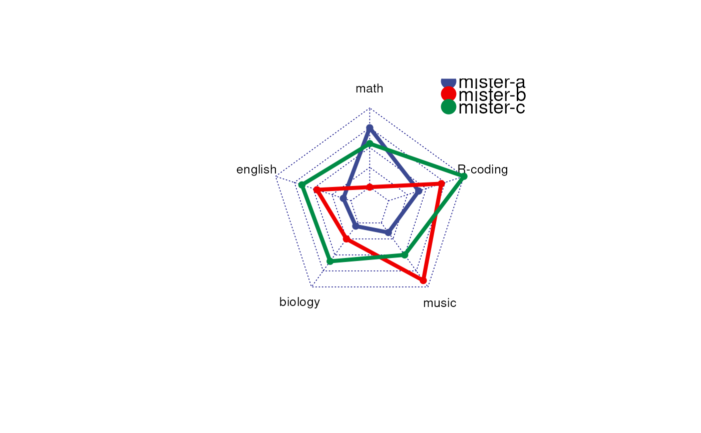

Radar plot (aka spider plot)
radarSpiderPlot(
df,
palette = "aaas",
min = 0,
max = NULL,
fill.color = FALSE,
axistype = 0,
cglcol = "navy",
vlabels = NULL
)Column is variable, Row is samples/class
Default aaas
min of the axis
max of the axis
Default is FALSE, no fill color
Default 0. The type of axes, specified by any of 0:5. 0 means no axis label. 1 means center axis label only. 2 means around-the-chart label only. 3 means both center and around-the-chart (peripheral) labels. 4 is .* format of 1, 5 is .* format of 3. Default is 0.
Default 'navy'. color of the net
Character vector for the names for variables. If NULL, the names of the variables as colnames(df) are used. Default NULL.
# https://www.r-graph-gallery.com/143-spider-chart-with-saveral-individuals.html
# Create data: note in High school for several students
set.seed(99)
df <- as.data.frame(matrix( sample( 0:20 , 15 , replace=F) , ncol=5))
colnames(df) <- c("math" , "english" , "biology" , "music" , "R-coding" )
rownames(df) <- paste("mister" , letters[1:3] , sep="-")
loonR::radarSpiderPlot(df)
#> Loading required package: fmsb
#> Registered S3 methods overwritten by 'fmsb':
#> method from
#> print.roc pROC
#> plot.roc pROC
#>
#> Attaching package: 'fmsb'
#> The following object is masked from 'package:pROC':
#>
#> roc
